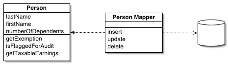

Data Mapper

Паттерн проектирования Data Mapper
Описание Data Mapper
Объектные и реляционные БД используют разные способы структурирования данных. Множество составляющих объектов, например коллекции и наследование, не представлены в реляционных БД. Когда проектируется объектная модель с большим количеством бизнес-логики, полезно применять такие механизмы для улучшения организации хранения данных и логики, которая работает c ними. Это приводит к различиям в организации. Так что объектная и реляционная схемы не идентичны.
Тем не менее, необходимость в обмене данными между двумя схемами не отпадает, и этот обмен становится, в свою очередь, сложным. Если же объект знает о реляционной структуре — изменения в одной из структур приведёт к проблемам в другой.
Data Mapper — это программная прослойка, разделяющая объект и БД. Его обязанность — пересылать данные между ними и изолировать их друг от друга. При использовании Data Mapper'а объекты не нуждаются в знании о существовании БД. Они не нуждаются в SQL-коде, и (естественно) в информации о структуре БД. Так как Data Mapper - это разновидность паттерна Mapper, сам объект-Mapper неизвестен объекту.
Примеры реализации
// Data Mapper Pattern in JavaScript
class User {
constructor(id, name, email) {
this.id = id;
this.name = name;
this.email = email;
}
}
class UserDataMapper {
constructor(database) {
this.db = database;
}
findById(id) {
const row = this.db.query('SELECT * FROM users WHERE id = ?', [id]);
return row ? this.mapRowToUser(row) : null;
}
findAll() {
const rows = this.db.query('SELECT * FROM users');
return rows.map(row => this.mapRowToUser(row));
}
save(user) {
if (user.id) {
return this.update(user);
} else {
return this.insert(user);
}
}
insert(user) {
const id = this.db.insert('INSERT INTO users (name, email) VALUES (?, ?)',
[user.name, user.email]);
return new User(id, user.name, user.email);
}
update(user) {
this.db.update('UPDATE users SET name = ?, email = ? WHERE id = ?',
[user.name, user.email, user.id]);
return user;
}
delete(id) {
return this.db.delete('DELETE FROM users WHERE id = ?', [id]);
}
mapRowToUser(row) {
return new User(row.id, row.name, row.email);
}
}
// Usage
const db = new Database();
const userMapper = new UserDataMapper(db);
const user = userMapper.findById(1);// Data Mapper Pattern in C++
#include <iostream>
#include <vector>
#include <memory>
#include <string>
class User {
private:
int id;
std::string name;
std::string email;
public:
User(int id, const std::string& name, const std::string& email)
: id(id), name(name), email(email) {}
int getId() const { return id; }
std::string getName() const { return name; }
std::string getEmail() const { return email; }
};
class Database {
public:
virtual ~Database() = default;
virtual std::vector<std::map<std::string, std::string>> query(const std::string& sql) = 0;
virtual int insert(const std::string& sql, const std::vector<std::string>& params) = 0;
virtual void update(const std::string& sql, const std::vector<std::string>& params) = 0;
virtual void remove(const std::string& sql, const std::vector<std::string>& params) = 0;
};
class UserDataMapper {
private:
Database* db;
public:
UserDataMapper(Database* database) : db(database) {}
std::unique_ptr<User> findById(int id) {
std::string sql = "SELECT * FROM users WHERE id = " + std::to_string(id);
auto rows = db->query(sql);
if (!rows.empty()) {
return mapRowToUser(rows[0]);
}
return nullptr;
}
std::vector<std::unique_ptr<User>> findAll() {
auto rows = db->query("SELECT * FROM users");
std::vector<std::unique_ptr<User>> users;
for (const auto& row : rows) {
users.push_back(mapRowToUser(row));
}
return users;
}
std::unique_ptr<User> save(const User& user) {
if (user.getId() > 0) {
update(user);
return std::make_unique<User>(user);
} else {
return insert(user);
}
}
private:
std::unique_ptr<User> mapRowToUser(const std::map<std::string, std::string>& row) {
int id = std::stoi(row.at("id"));
return std::make_unique<User>(id, row.at("name"), row.at("email"));
}
std::unique_ptr<User> insert(const User& user) {
// Implementation would insert and return new user with ID
return std::make_unique<User>(1, user.getName(), user.getEmail());
}
void update(const User& user) {
// Implementation would update user
}
};// Data Mapper Pattern in Go
package main
import (
"database/sql"
"fmt"
)
type User struct {
ID int
Name string
Email string
}
type Database interface {
Query(sql string, args ...interface{}) (*sql.Rows, error)
Exec(sql string, args ...interface{}) (sql.Result, error)
}
type UserDataMapper struct {
db Database
}
func NewUserDataMapper(db Database) *UserDataMapper {
return &UserDataMapper{db: db}
}
func (m *UserDataMapper) FindByID(id int) (*User, error) {
rows, err := m.db.Query("SELECT id, name, email FROM users WHERE id = ?", id)
if err != nil {
return nil, err
}
defer rows.Close()
if rows.Next() {
var user User
err := rows.Scan(&user.ID, &user.Name, &user.Email)
if err != nil {
return nil, err
}
return &user, nil
}
return nil, nil
}
func (m *UserDataMapper) FindAll() ([]*User, error) {
rows, err := m.db.Query("SELECT id, name, email FROM users")
if err != nil {
return nil, err
}
defer rows.Close()
var users []*User
for rows.Next() {
var user User
err := rows.Scan(&user.ID, &user.Name, &user.Email)
if err != nil {
return nil, err
}
users = append(users, &user)
}
return users, nil
}
func (m *UserDataMapper) Save(user *User) (*User, error) {
if user.ID > 0 {
return m.Update(user)
} else {
return m.Insert(user)
}
}
func (m *UserDataMapper) Insert(user *User) (*User, error) {
result, err := m.db.Exec("INSERT INTO users (name, email) VALUES (?, ?)",
user.Name, user.Email)
if err != nil {
return nil, err
}
id, err := result.LastInsertId()
if err != nil {
return nil, err
}
return &User{ID: int(id), Name: user.Name, Email: user.Email}, nil
}
func (m *UserDataMapper) Update(user *User) (*User, error) {
_, err := m.db.Exec("UPDATE users SET name = ?, email = ? WHERE id = ?",
user.Name, user.Email, user.ID)
if err != nil {
return nil, err
}
return user, nil
}# Data Mapper Pattern in Python
from abc import ABC, abstractmethod
from typing import List, Optional
class User:
def __init__(self, id: int, name: str, email: str):
self.id = id
self.name = name
self.email = email
class Database(ABC):
@abstractmethod
def query(self, sql: str, params: tuple = None) -> List[dict]:
pass
@abstractmethod
def insert(self, sql: str, params: tuple) -> int:
pass
@abstractmethod
def update(self, sql: str, params: tuple) -> None:
pass
@abstractmethod
def delete(self, sql: str, params: tuple) -> None:
pass
class UserDataMapper:
def __init__(self, database: Database):
self.db = database
def find_by_id(self, id: int) -> Optional[User]:
rows = self.db.query("SELECT * FROM users WHERE id = %s", (id,))
if rows:
return self._map_row_to_user(rows[0])
return None
def find_all(self) -> List[User]:
rows = self.db.query("SELECT * FROM users")
return [self._map_row_to_user(row) for row in rows]
def save(self, user: User) -> User:
if user.id:
return self._update(user)
else:
return self._insert(user)
def _insert(self, user: User) -> User:
user_id = self.db.insert(
"INSERT INTO users (name, email) VALUES (%s, %s)",
(user.name, user.email)
)
return User(user_id, user.name, user.email)
def _update(self, user: User) -> User:
self.db.update(
"UPDATE users SET name = %s, email = %s WHERE id = %s",
(user.name, user.email, user.id)
)
return user
def _map_row_to_user(self, row: dict) -> User:
return User(row['id'], row['name'], row['email'])
# Usage
if __name__ == "__main__":
db = Database()
mapper = UserDataMapper(db)
user = mapper.find_by_id(1)<?php
// Data Mapper Pattern in PHP
class User {
private $id;
private $name;
private $email;
public function __construct($id, $name, $email) {
$this->id = $id;
$this->name = $name;
$this->email = $email;
}
public function getId() { return $this->id; }
public function getName() { return $this->name; }
public function getEmail() { return $this->email; }
}
interface Database {
public function query($sql, $params = []);
public function insert($sql, $params = []);
public function update($sql, $params = []);
public function delete($sql, $params = []);
}
class UserDataMapper {
private $db;
public function __construct(Database $database) {
$this->db = $database;
}
public function findById($id) {
$rows = $this->db->query("SELECT * FROM users WHERE id = ?", [$id]);
if (!empty($rows)) {
return $this->mapRowToUser($rows[0]);
}
return null;
}
public function findAll() {
$rows = $this->db->query("SELECT * FROM users");
return array_map([$this, 'mapRowToUser'], $rows);
}
public function save(User $user) {
if ($user->getId()) {
return $this->update($user);
} else {
return $this->insert($user);
}
}
private function insert(User $user) {
$id = $this->db->insert(
"INSERT INTO users (name, email) VALUES (?, ?)",
[$user->getName(), $user->getEmail()]
);
return new User($id, $user->getName(), $user->getEmail());
}
private function update(User $user) {
$this->db->update(
"UPDATE users SET name = ?, email = ? WHERE id = ?",
[$user->getName(), $user->getEmail(), $user->getId()]
);
return $user;
}
private function mapRowToUser($row) {
return new User($row['id'], $row['name'], $row['email']);
}
}
// Usage
$db = new Database();
$mapper = new UserDataMapper($db);
$user = $mapper->findById(1);
?>Использована доработанная иллюстрация с сайта Мартина Фаулера.